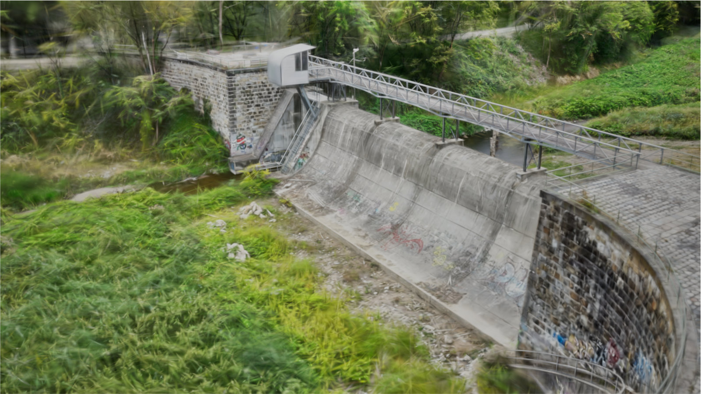
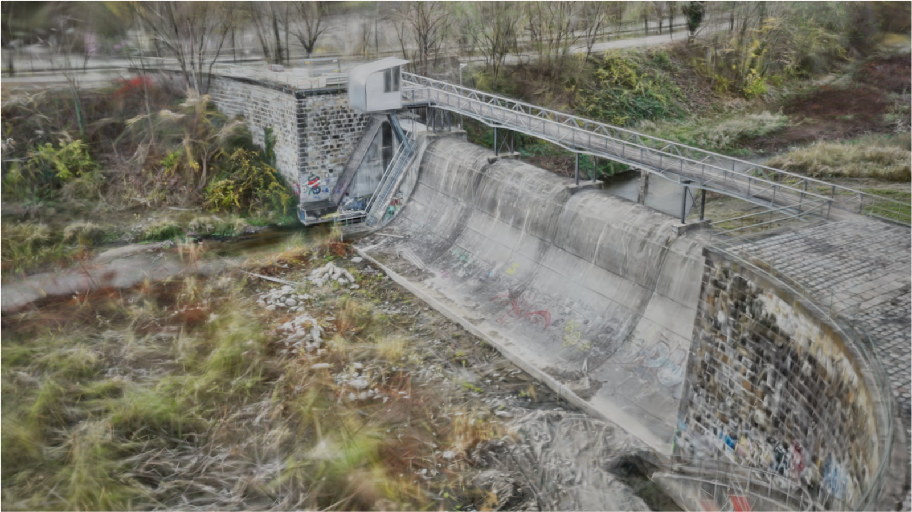
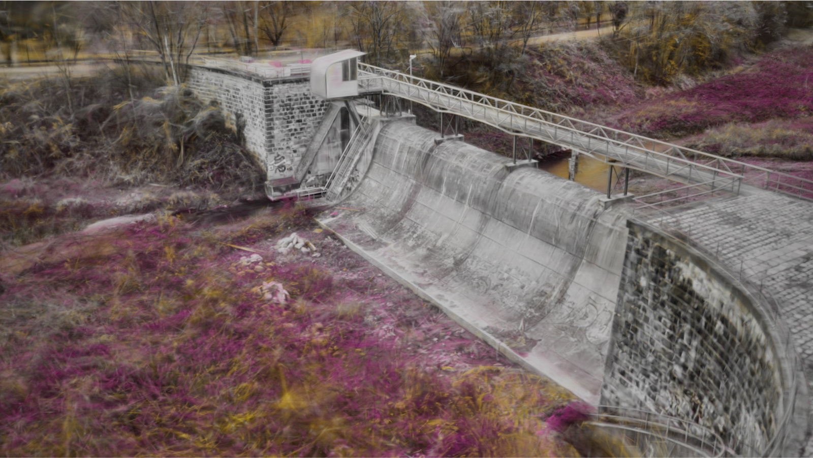

ChronoFuseGS incrementally fuses individually trained Gaussian Splatting models and visualizes changes at the Gaussian primitive level. Left: Individual timesteps. Center: Change highlighting between the first two timesteps. Right: After fusion of a third timestep, changes across all three timesteps are highlighted. Colors indicate at which timesteps parts of the scene changed, while persistent parts retain their appearance.
Reconstructing environments where parts of the scene change between captured image sets poses a challenge for 3D scene reconstruction. We present ChronoFuseGS, a multi-temporal Gaussian Splatting approach that addresses this issue by taking multiple separately trained Gaussian Splatting models, each representing a distinct timestep and partially overlapping in geographic coverage, and merging them into a single combined model. By allowing Gaussians from one timestep to contribute to the reconstruction at other timesteps, our approach leverages data across all captured timesteps to refine persistent parts of the scene.
The model supports incremental extension, allowing new timesteps to be added while preserving the existing merged reconstruction. It encodes, for each Gaussian primitive, at which timesteps it contributes to the reconstruction. To support visual exploration of the reconstructed scene, we present a change-aware visualization approach that highlights the parts of the scene that have changed across a user-defined time selection, while preserving the color of persistent parts. Since the persistence encoding operates at the Gaussian primitive level, changes are visualized at sub-object granularity rather than being limited to object-level changes.
We evaluate our approach on a real-world outdoor dataset of a flood management area, captured over 6.5 months across eight recording days and covering seasonal vegetation changes, snow cover, and flooding events, which we make publicly available. Our results demonstrate that the combined model consistently outperforms individually trained single-timestep models in novel-view synthesis quality, recovers structural details absent in the individual reconstructions, and reliably highlights changes in fine details and sub-parts of objects and natural structures.
ChronoFuseGS takes multiple individually pre-trained Gaussian Splatting models — each covering a distinct timestep — and merges them into a single combined model. A cross-timestep initialization step then optimizes, for each Gaussian, a persistence value indicating whether it is visible at other timesteps, along with a light compensation term to account for illumination differences. A final combined refinement jointly trains all Gaussians against all timestep image sets, improving reconstruction quality beyond what any individual model achieves alone. New timesteps can be added incrementally without reprocessing previously merged data. The resulting per-Gaussian persistence encoding directly drives a change-aware visualization that highlights where and when parts of the scene changed, while persistent areas retain their true appearance.



Left and center: Combined refined model rendered in true color at T0 and T1. Right: Change highlighting between T0 and T1. Persistent parts of the scene — such as the dam structure and rocks — are rendered in grayscale, while changed parts are colored to indicate at which timestep they are present.
True Color
Change Highlighting
Left: True color rendering of the combined refined model for the selected timestep. Right: Change highlighting across the selected timesteps; persistent parts are rendered in grayscale, and colors indicate at which timesteps parts of the scene are present.
@article{batik2026chronofusegs,
title = {{ChronoFuseGS}: Multi-Temporal {Gaussian} Fusion with
Per-Splat Persistence and Change Visualization},
author = {Batik, Tobias and Marin, Diana and K{\'{a}}n, Peter
and Kaufmann, Hannes},
year = {2026},
}